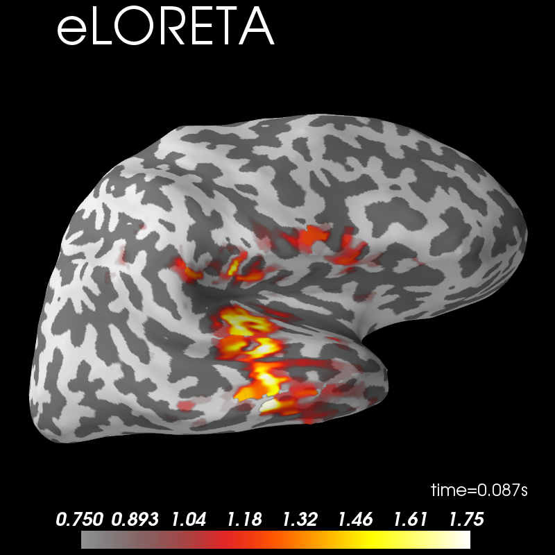
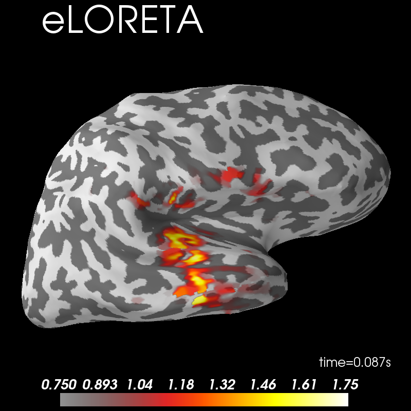

Note
Click here to download the full example code
Source localization with MNE/dSPM/sLORETA/eLORETA¶
The aim of this tutorial is to teach you how to compute and apply a linear minimum-norm inverse method on evoked/raw/epochs data.
import numpy as np
import matplotlib.pyplot as plt
import mne
from mne.datasets import sample
from mne.minimum_norm import make_inverse_operator, apply_inverse
Process MEG data
data_path = sample.data_path()
raw_fname = data_path + '/MEG/sample/sample_audvis_filt-0-40_raw.fif'
raw = mne.io.read_raw_fif(raw_fname) # already has an average reference
events = mne.find_events(raw, stim_channel='STI 014')
event_id = dict(aud_l=1) # event trigger and conditions
tmin = -0.2 # start of each epoch (200ms before the trigger)
tmax = 0.5 # end of each epoch (500ms after the trigger)
raw.info['bads'] = ['MEG 2443', 'EEG 053']
baseline = (None, 0) # means from the first instant to t = 0
reject = dict(grad=4000e-13, mag=4e-12, eog=150e-6)
epochs = mne.Epochs(raw, events, event_id, tmin, tmax, proj=True,
picks=('meg', 'eog'), baseline=baseline, reject=reject)
Out:
Opening raw data file /home/circleci/mne_data/MNE-sample-data/MEG/sample/sample_audvis_filt-0-40_raw.fif...
Read a total of 4 projection items:
PCA-v1 (1 x 102) idle
PCA-v2 (1 x 102) idle
PCA-v3 (1 x 102) idle
Average EEG reference (1 x 60) idle
Range : 6450 ... 48149 = 42.956 ... 320.665 secs
Ready.
Current compensation grade : 0
319 events found
Event IDs: [ 1 2 3 4 5 32]
72 matching events found
Applying baseline correction (mode: mean)
Not setting metadata
Created an SSP operator (subspace dimension = 3)
4 projection items activated
Compute regularized noise covariance¶
For more details see Computing a covariance matrix.
noise_cov = mne.compute_covariance(
epochs, tmax=0., method=['shrunk', 'empirical'], rank=None, verbose=True)
fig_cov, fig_spectra = mne.viz.plot_cov(noise_cov, raw.info)


Out:
Loading data for 72 events and 106 original time points ...
Rejecting epoch based on EOG : ['EOG 061']
Rejecting epoch based on EOG : ['EOG 061']
Rejecting epoch based on EOG : ['EOG 061']
Rejecting epoch based on EOG : ['EOG 061']
Rejecting epoch based on EOG : ['EOG 061']
Rejecting epoch based on MAG : ['MEG 1711']
Rejecting epoch based on EOG : ['EOG 061']
Rejecting epoch based on EOG : ['EOG 061']
Rejecting epoch based on EOG : ['EOG 061']
Rejecting epoch based on EOG : ['EOG 061']
Rejecting epoch based on EOG : ['EOG 061']
Rejecting epoch based on EOG : ['EOG 061']
Rejecting epoch based on EOG : ['EOG 061']
Rejecting epoch based on EOG : ['EOG 061']
Rejecting epoch based on EOG : ['EOG 061']
Rejecting epoch based on EOG : ['EOG 061']
Rejecting epoch based on EOG : ['EOG 061']
17 bad epochs dropped
Computing rank from data with rank=None
Using tolerance 2.8e-09 (2.2e-16 eps * 305 dim * 4.2e+04 max singular value)
Estimated rank (mag + grad): 302
MEG: rank 302 computed from 305 data channels with 3 projectors
Created an SSP operator (subspace dimension = 3)
Setting small MEG eigenvalues to zero (without PCA)
Reducing data rank from 305 -> 302
Estimating covariance using SHRUNK
Done.
Estimating covariance using EMPIRICAL
Done.
Using cross-validation to select the best estimator.
Number of samples used : 1705
log-likelihood on unseen data (descending order):
shrunk: -1467.261
empirical: -1574.608
selecting best estimator: shrunk
[done]
Computing rank from covariance with rank=None
Using tolerance 2.2e-14 (2.2e-16 eps * 102 dim * 0.98 max singular value)
Estimated rank (mag): 99
MAG: rank 99 computed from 102 data channels with 0 projectors
Computing rank from covariance with rank=None
Using tolerance 1.6e-13 (2.2e-16 eps * 203 dim * 3.5 max singular value)
Estimated rank (grad): 203
GRAD: rank 203 computed from 203 data channels with 0 projectors
Compute the evoked response¶
Let’s just use the MEG channels for simplicity.
evoked = epochs.average().pick('meg')
evoked.plot(time_unit='s')
evoked.plot_topomap(times=np.linspace(0.05, 0.15, 5), ch_type='mag',
time_unit='s')
# Show whitening:
evoked.plot_white(noise_cov, time_unit='s')
del epochs, raw # to save memory


Out:
Computing rank from covariance with rank=None
Using tolerance 1.6e-13 (2.2e-16 eps * 203 dim * 3.5 max singular value)
Estimated rank (grad): 203
GRAD: rank 203 computed from 203 data channels with 0 projectors
Computing rank from covariance with rank=None
Using tolerance 2.2e-14 (2.2e-16 eps * 102 dim * 0.98 max singular value)
Estimated rank (mag): 99
MAG: rank 99 computed from 102 data channels with 3 projectors
Created an SSP operator (subspace dimension = 3)
Computing rank from covariance with rank={'grad': 203, 'mag': 99, 'meg': 302}
Setting small MEG eigenvalues to zero (without PCA)
Created the whitener using a noise covariance matrix with rank 302 (3 small eigenvalues omitted)
Inverse modeling: MNE/dSPM on evoked and raw data¶
# Read the forward solution and compute the inverse operator
fname_fwd = data_path + '/MEG/sample/sample_audvis-meg-oct-6-fwd.fif'
fwd = mne.read_forward_solution(fname_fwd)
# make an MEG inverse operator
inverse_operator = make_inverse_operator(
evoked.info, fwd, noise_cov, loose=0.2, depth=0.8)
del fwd
# You can write it to disk with::
#
# >>> from mne.minimum_norm import write_inverse_operator
# >>> write_inverse_operator('sample_audvis-meg-oct-6-inv.fif',
# inverse_operator)
Out:
Reading forward solution from /home/circleci/mne_data/MNE-sample-data/MEG/sample/sample_audvis-meg-oct-6-fwd.fif...
Reading a source space...
Computing patch statistics...
Patch information added...
Distance information added...
[done]
Reading a source space...
Computing patch statistics...
Patch information added...
Distance information added...
[done]
2 source spaces read
Desired named matrix (kind = 3523) not available
Read MEG forward solution (7498 sources, 306 channels, free orientations)
Source spaces transformed to the forward solution coordinate frame
Converting forward solution to surface orientation
Average patch normals will be employed in the rotation to the local surface coordinates....
Converting to surface-based source orientations...
[done]
info["bads"] and noise_cov["bads"] do not match, excluding bad channels from both
Computing inverse operator with 305 channels.
305 out of 306 channels remain after picking
Selected 305 channels
Creating the depth weighting matrix...
203 planar channels
limit = 7265/7498 = 10.037795
scale = 2.52065e-08 exp = 0.8
Applying loose dipole orientations. Loose value of 0.2.
Whitening the forward solution.
Created an SSP operator (subspace dimension = 3)
Computing rank from covariance with rank=None
Using tolerance 2.9e-13 (2.2e-16 eps * 305 dim * 4.3 max singular value)
Estimated rank (mag + grad): 302
MEG: rank 302 computed from 305 data channels with 3 projectors
Setting small MEG eigenvalues to zero (without PCA)
Creating the source covariance matrix
Adjusting source covariance matrix.
Computing SVD of whitened and weighted lead field matrix.
largest singular value = 4.69106
scaling factor to adjust the trace = 9.00563e+18
Compute inverse solution¶
Out:
Preparing the inverse operator for use...
Scaled noise and source covariance from nave = 1 to nave = 55
Created the regularized inverter
Created an SSP operator (subspace dimension = 3)
Created the whitener using a noise covariance matrix with rank 302 (3 small eigenvalues omitted)
Computing noise-normalization factors (dSPM)...
[done]
Applying inverse operator to "aud_l"...
Picked 305 channels from the data
Computing inverse...
Eigenleads need to be weighted ...
Computing residual...
Explained 65.6% variance
Combining the current components...
dSPM...
[done]
Visualization¶
View activation time-series
fig, ax = plt.subplots()
ax.plot(1e3 * stc.times, stc.data[::100, :].T)
ax.set(xlabel='time (ms)', ylabel='%s value' % method)

Examine the original data and the residual after fitting:
fig, axes = plt.subplots(2, 1)
evoked.plot(axes=axes)
for ax in axes:
ax.texts = []
for line in ax.lines:
line.set_color('#98df81')
residual.plot(axes=axes)

Here we use peak getter to move visualization to the time point of the peak and draw a marker at the maximum peak vertex.
vertno_max, time_max = stc.get_peak(hemi='rh')
subjects_dir = data_path + '/subjects'
surfer_kwargs = dict(
hemi='rh', subjects_dir=subjects_dir,
clim=dict(kind='value', lims=[8, 12, 15]), views='lateral',
initial_time=time_max, time_unit='s', size=(800, 800), smoothing_steps=10)
brain = stc.plot(**surfer_kwargs)
brain.add_foci(vertno_max, coords_as_verts=True, hemi='rh', color='blue',
scale_factor=0.6, alpha=0.5)
brain.add_text(0.1, 0.9, 'dSPM (plus location of maximal activation)', 'title',
font_size=14)

Morph data to average brain¶
# setup source morph
morph = mne.compute_source_morph(
src=inverse_operator['src'], subject_from=stc.subject,
subject_to='fsaverage', spacing=5, # to ico-5
subjects_dir=subjects_dir)
# morph data
stc_fsaverage = morph.apply(stc)
brain = stc_fsaverage.plot(**surfer_kwargs)
brain.add_text(0.1, 0.9, 'Morphed to fsaverage', 'title', font_size=20)
del stc_fsaverage

Dipole orientations¶
The pick_ori parameter of the
mne.minimum_norm.apply_inverse() function controls
the orientation of the dipoles. One useful setting is pick_ori='vector',
which will return an estimate that does not only contain the source power at
each dipole, but also the orientation of the dipoles.
stc_vec = apply_inverse(evoked, inverse_operator, lambda2,
method=method, pick_ori='vector')
brain = stc_vec.plot(**surfer_kwargs)
brain.add_text(0.1, 0.9, 'Vector solution', 'title', font_size=20)
del stc_vec
Out:
Preparing the inverse operator for use...
Scaled noise and source covariance from nave = 1 to nave = 55
Created the regularized inverter
Created an SSP operator (subspace dimension = 3)
Created the whitener using a noise covariance matrix with rank 302 (3 small eigenvalues omitted)
Computing noise-normalization factors (dSPM)...
[done]
Applying inverse operator to "aud_l"...
Picked 305 channels from the data
Computing inverse...
Eigenleads need to be weighted ...
Computing residual...
Explained 65.6% variance
dSPM...
[done]
Note that there is a relationship between the orientation of the dipoles and the surface of the cortex. For this reason, we do not use an inflated cortical surface for visualization, but the original surface used to define the source space.
For more information about dipole orientations, see The role of dipole orientations in distributed source localization.
Now let’s look at each solver:
surfer_kwargs['clim'].update(kind='percent', lims=[99, 99.9, 99.99])
for mi, method in enumerate(['dSPM', 'sLORETA', 'eLORETA']):
stc = apply_inverse(evoked, inverse_operator, lambda2,
method=method, pick_ori=None,
verbose=True)
brain = stc.plot(figure=mi, **surfer_kwargs)
brain.add_text(0.1, 0.9, method, 'title', font_size=20)
del stc

- 
- 
Out:
Preparing the inverse operator for use...
Scaled noise and source covariance from nave = 1 to nave = 55
Created the regularized inverter
Created an SSP operator (subspace dimension = 3)
Created the whitener using a noise covariance matrix with rank 302 (3 small eigenvalues omitted)
Computing noise-normalization factors (dSPM)...
[done]
Applying inverse operator to "aud_l"...
Picked 305 channels from the data
Computing inverse...
Eigenleads need to be weighted ...
Computing residual...
Explained 65.6% variance
Combining the current components...
dSPM...
[done]
Using control points [ 5.82148925 14.04221459 22.66389102]
Preparing the inverse operator for use...
Scaled noise and source covariance from nave = 1 to nave = 55
Created the regularized inverter
Created an SSP operator (subspace dimension = 3)
Created the whitener using a noise covariance matrix with rank 302 (3 small eigenvalues omitted)
Computing noise-normalization factors (sLORETA)...
[done]
Applying inverse operator to "aud_l"...
Picked 305 channels from the data
Computing inverse...
Eigenleads need to be weighted ...
Computing residual...
Explained 65.6% variance
Combining the current components...
sLORETA...
[done]
Using control points [2.06758926 4.19644441 6.28618395]
Preparing the inverse operator for use...
Scaled noise and source covariance from nave = 1 to nave = 55
Created the regularized inverter
Created an SSP operator (subspace dimension = 3)
Created the whitener using a noise covariance matrix with rank 302 (3 small eigenvalues omitted)
Computing optimized source covariance (eLORETA)...
Using independent orientation weights
Fitting up to 20 iterations (this make take a while)...
Converged on iteration 10 (8.9e-07 < 1e-06)
Updating inverse with weighted eigen leads
[done]
Applying inverse operator to "aud_l"...
Picked 305 channels from the data
Computing inverse...
Eigenleads already weighted ...
Computing residual...
Explained 65.2% variance
Combining the current components...
[done]
Using control points [1.20104300e-10 2.25801271e-10 3.47030453e-10]
Total running time of the script: ( 0 minutes 51.169 seconds)
Estimated memory usage: 61 MB